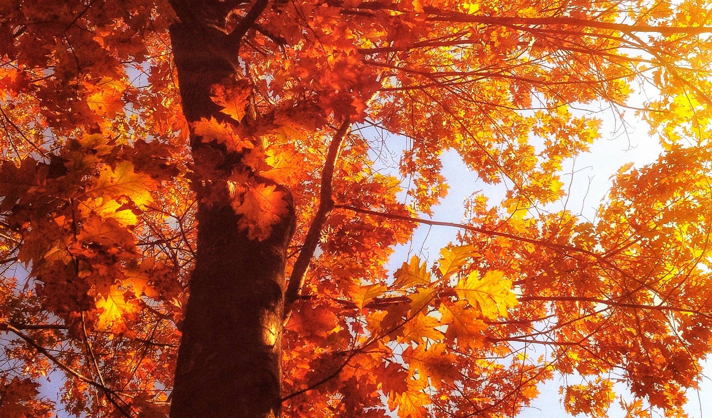

Wines to Fall For: A Guide to Perfect Autumn Pours

As the days get shorter and the air turns crisp, our cravings for the lighter, refreshing wines of summer start to fade. The changing leaves and cooler temperatures call for something a little richer, a little warmer, and a little more comforting. Just like swapping out our wardrobes, it's time to transition our wine choices to suit the season.
So, what exactly makes a wine perfect for fall? It's all about depth and complexity, flavours that complement the heartier dishes we turn to for comfort. Think full-bodied whites, rich blends, and robust reds that can stand up to autumn's bold flavours.
Full-Bodied Whites: More Than a Summer Fling
Just because the temperature is dropping doesn't mean you have to say goodbye to white wine. Fuller-bodied whites like Viognier, Chardonnay, and Pinot Gris bring the weight and texture needed to pair with the season's richer dishes. These whites offer creamy, nutty, and even spicy notes that feel just right for cool evenings, especially when paired with roasted poultry or a creamy butternut squash risotto.
True Myth Chardonnay
California
Balanced creaminess with hints of ripe stone fruit. Perfect for sipping solo or alongside a roast chicken.
Loveblock Pinot Gris
New Zealand
Clean and crisp, yet with a fuller mouthfeel that pairs beautifully with roasted root vegetables and buttery dishes.
Rich Blends: The Best of Both Worlds
Blends are a fantastic way to enjoy a medley of flavours and textures. They can bring together the softness of Merlot, the spiciness of Syrah, and the boldness of Cabernet, creating a wine that's both complex and comforting. Perfect for cozying up by the fire or sharing with friends over a hearty beef stew or wild mushroom pasta.
3 Passo Rosso
Italy
Smooth, full-bodied, and bursting with dark fruit flavours. A great match for the rich sauces and earthy flavours of fall cuisine.
Les Annereaux
Bordeaux, France
A classic Bordeaux blend with balanced tannins and notes of blackcurrant and cedar. Ideal for pairing with braised meats.
Reds That Warm the Soul
When it comes to fall, nothing beats the comforting embrace of a good red wine. Look for bottles with bold tannins and a bit of spice, like a robust Amarone or an earthy Monastrell. These reds are perfect for sipping slowly, savouring the way they unfold on the palate, and a great match for those slow-cooked stews and hearty casseroles that fill the kitchen with warmth and aroma.
Finca Bacara 3015 Monastrell
Spain
Bold and earthy with rich berry flavours. Perfect for those seeking a wine that stands up to the heartiest of meals.
Il Sestante Amarone della Valpolicella
Italy
A powerhouse red with layers of dark fruit, chocolate, and spice that will elevate any special fall occasion.
Pairing with the Season's Bounty
One of the joys of fall is the abundance of seasonal produce — squash, apples, sweet potatoes, and wild mushrooms. These ingredients pair beautifully with wines that have a bit more structure and complexity. Consider experimenting with new combinations to find your perfect match. A creamy pumpkin soup with a rich Viognier, or an apple tart paired with an off-dry Riesling, can take your fall gatherings to the next level.
Embrace the Season in Every Glass
Whether you're unwinding after a long day or hosting a cozy dinner party, fall wines have a way of making everything feel a bit more special. So pour yourself a glass of something that captures the warmth and richness of the season. After all, these are wines to fall for.